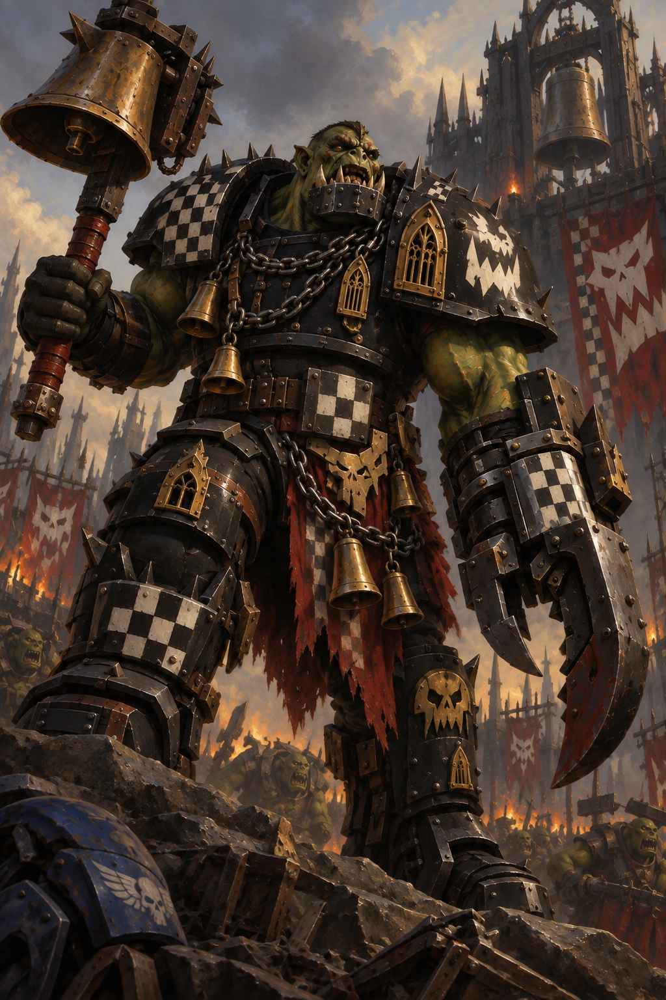

SOULSTORM · IMPERIUM NIHILUS
The Atreus Campaign
Cycle 4 · Phase 0 complete; awaiting Iron Paladins orders
Ten systems. Three Major Factions. Service, suspicion and conquest.
System directory
Roster only: all systems are reachable with normal Fleet Movement. No travel lanes or directional restrictions.
Argos3 holdings
Eleusis3 holdings
Calydon3 holdings
Aulis2 holdings
Mycenae3 holdings
Delphi4 holdings
Nemea3 holdings
Lerna3 holdings
Ithaca4 holdings
Thessaly4 holdings
The Atreus Campaign
Created 7 October 2026 · Subsector playtest · Cycle 4 - Phase 0 complete
Authoritative ledger: Atreus_Campaign.md · Live campaign · Status
Rules: 6 October 2026 playtest edition with the approved 7 October Minor Alignment correction. The base edition was pinned to GitHub commit 113ec69a6163d36fb2164b9b624d14d8889986e5. The complete rules, including that correction, follow the campaign registers below. Later source changes do not automatically migrate this campaign. The observed balance spread remains 28 percentage points; human playtesting is now the purpose. Dessica remains a separate suspended campaign.
Opening situation
For generations, Atreus sent armies outward and received their survivors through its shrines. Foundries cast engines beside cathedral bells; pilgrims crowded the same anchorages that loaded troop transports. Isolation has left the machinery of that old obligation intact in places, but no authority accepted everywhere.
From Tiryns, Warsmith Acastor Orontes offers the service of the Iron Paladins to worlds the wider Imperium can no longer reach. Canoness Althaia sees another danger in their arrival. To her, their ancestry and long passage through the Eye make their professions of loyalty impossible to trust. She intends to destroy the Chapter. In Calydon, Bell-Ringa has taken a foundry Capital and gathers mobs to the sound of stolen bells. The surviving rulers of Atreus must decide whose protection they can afford—and whose demands they can survive.
The Paladins’ loyalty is an established fact of the setting. Their supposed corruption is the Order’s conviction, not a revelation about the Chapter. No distant Imperial authority has issued a new decree in this campaign.
Campaign conventions and opening status
- Standing rollover procedure (Jake, 7 October 2026): after the third Major turn, finish Cycle-end checks, increment the Cycle, reset Fleet Actions and resolve Phase 0 in order: construction effects, scheduled Logistics including income/upkeep, then events. Publish the resulting state before handing back to the Iron Paladins. Do not wait for a separate opening request.
- Three Major Factions, in fixed order: Iron Paladins → WAAAGH! Bell-Ringa → Order of Saint Erigone. Minor factions take no turns.
- Every Major starts with 20 Supply, 20 Manpower, one 5/5 fleet and its 12/12 Capital only. This equal 5/5 opening is the explicit Atreus setup convention; Create Fleet during play remains 1/5 unless a rule changes it.
- Each Major home system also contains one hostile ordinary Minor with a Standard and Minor planet. This is the approved home profile, not extra territory for the Major.
- Ten systems; Fleet Movement reaches any system with the normal action. No directional, adjacency, distance or travel-lane mechanics. The system directory is a roster, not a route network.
- Mycenae is the authored prize system: House Atreides owns a Capital planet, Standard planet and Minor station. This fixed profile implements the approved prize placement; it is not represented as a rolled ordinary profile.
- The remaining six systems use the saved d20 rolls. Ownership, names and faction identities are authored independently of those rolls. No rerolls were made.
- Campaign victory convention: the last surviving Major wins after rival Majors lose their final fallback. An agreed concession can end play earlier. Minor holdings do not become owned territory and need not be conquered to meet this condition. No forced 100-Cycle ending.
- Cycle 1 Phase 0 is resolved once: no periodic construction effects or Endurance recovery; Logistics is not due; event check d6 = 3, so no event. Opening effects left starting resources, holdings and fleets unchanged. First Logistics is Cycle 3. All three Major turns are resolved below. Olenos has fallen to the Orks and Daeira to the Order. Cycle 1 is complete. Cycle 2 is complete; its Warp Storm has expired. Cycle 3 construction effects, Logistics and event check are resolved below; no event is active.
- Calendar date within Imperium Nihilus is intentionally unspecified. Track elapsed Cycles; there is no invented conversion to years. Exact officer ages and any finite lifespan windows remain unassigned, so no automatic ageing deaths are scheduled.
- Artwork establishes visual identity. Army Painter channel mapping remains unassigned until the actual faction interfaces are checked; this gives no mechanical benefit and does not delay campaign setup.
Major faction registers
1. Iron Paladins
The Iron Paladins descend from loyal Iron Warriors who rejected Perturabo. Their penitence crusade in the Eye produced a distinct Chapter, its own offices and a religious obligation to the wounded Emperor. They serve the Imperium and would obey Guilliman; their independent operational oversight pending orders is not separatism. Orontes commands. Menandros advises, leads the Ironbound and is the designated successor; Jake retains the Warsmith’s decisions. The Chapter favours prepared assaults and durable protection, with each protected world adding obligations.
2. WAAAGH! Bell-Ringa
Bell-Ringa won his command by crushing his predecessor with a cathedral bell. The captured foundries of Da Bellworks support a Goff host that values hard fighting, working engines and trophies earned by conquest. Boss Nob Klanga coordinates mobs and detached forces. Growth depends on bringing fighters, ships and ammunition to the same battle; pride can draw the Warboss into an expensive unfinished fight. Da Gate-Krasha commemorates the fleet’s breaches of the foundry anchorage, without assigning a special ship or bonus.

3. Order of Saint Erigone
The Order’s convents and shrine network preserve hospitals, military stores and authority across isolated communities. Its fictional campaign saint, Erigone, is remembered for three refusals of sanctuary to a rebel household. Althaia’s immediate case against the Paladins is their time in the Eye, reinforced by their Legion ancestry. She seeks their destruction and refuses joint operations regardless of their loyal conduct. Palatine Ianthe shares that judgement but can dispute methods and timing. Material support does not remove the need to conserve trained Sisters.
Personnel and succession
One Manpower represents approximately 40 Astartes, 400 Orks or 100 Sisters in the relevant Major military pool. These are abstractions, not exact ship complements or fixed Chapter establishments. Succession does not reset resources or traits. Jake may temporarily voice Klanga or Ianthe as in-character counsel; neither receives an extra action.
Diplomacy and explicit hostility exceptions
7 October ruling: only Major Factions have Alignments. Minor Factions have no Alignment. They are independent hostile powers and cannot enter diplomatic agreements or alliances. Species, Emperor worship, human origin and Soulstorm army selection do not confer alliance. A Minor incorporated into a Major ceases to be a separate aligned Minor.
All three Majors are mutually hostile. Iron Paladins and Order of Saint Erigone retain Imperium Alignment but have the agreed explicit hostility exception. WAAAGH! Bell-Ringa has Ork Alignment.
All 13 Minors are independent hostile powers; none can negotiate an agreement with a Major or another Minor. Their ships count as hostile to other factions, including other Minors. Rustjaw is not allied to Bell-Ringa; the Thessalian commands are not allied to each other. No territorial absorption, truce or communiqué has occurred.
Death is the only absolution
The Order of Saint Erigone and the Iron Paladins begin the campaign with this exchange defining their hostility.
The Sisters:
> The traitor legions are damned. The sin is in the geneseed. You carry Perturabo's legacy in your blood. Death is the only absolution.
The Paladins:
> We agree. We ARE damned. We owe a debt that can never be repaid. But a corpse digs no trenches. A corpse holds no wall. We will serve until our bodies fail, and THEN you can have our deaths - but not one moment sooner, because wasted potential is its own sin against the Great Work.
For Althaia, their answer confirms the sentence: continued service cannot cleanse what she believes is corruption carried in their blood. She seeks their destruction, not their departure from Atreus. Their years in the Eye of Terror deepen her conviction, even in the absence of outward taint.
For the Paladins, damnation expresses the debt they accept and the penance they owe. They remain loyal servants of the Emperor. Every trench dug, wall held and Imperial life defended is work still owed; surrendering their lives while they can perform that work would itself betray their duty. Their acknowledgement gives the Order no right to decide when that service ends.
The same language of guilt and absolution therefore sustains both sides of the conflict. The Order demands death now; the Paladins insist upon service for as long as they can give it.
Fixed Third Party Raid
The Nail-Takers, an Iron Warriors raiding detachment led by Warsmith Kordax, are the fixed raiders for Atreus. Their name refers to the metal spikes driven through armour plates stripped from captured engines and displayed as trophies. They seek war matériel and captives while local defenders are committed elsewhere. They are separate from House Atreides and every other holding faction.
Use Chaos Marines to represent the Iron Warriors; switch to a dedicated Iron Warriors entry only if confirmed in the installed mod. The verified Unification roster does not list a standalone Iron Warriors race. The detachment has no campaign holdings, resource pool, fleet register, turns or territory-capture rights. The raid event is not active at setup. When it occurs, the raider fields one team in the first round, with each main side limited to three deployed teams while the raider remains; overflow waits in reserve. Once beaten, the raider is removed for that engagement. Subsequent main-side rounds use the agreed maximum four each and the survivor/reserve procedure. No extra trait or bespoke difficulty effect is granted.
Systems and holdings
All holdings start at full defence; none is Defended. All fleets are unengaged with unused actions. A Capital’s built-in shipyard exists without a construction slot; other industrial or religious descriptions grant no completed construction.
Argos
Void Superiority: Iron Paladins 5 vs Argive Muster Council 1 - Iron Paladins superior; hostile fleet present.
Former assembly and administration centre; the Chapter controls Tiryns, not the entire system.
Setup: fixed home/prize profile recorded above.
Argive Muster Council — Death Korps of Krieg: Strategos Damas commands hereditary PDF officers whose authority rests on muster warrants issued before the isolation. Their families kept Heraion’s depots intact while promised reinforcements failed to arrive; they regard the Paladins’ requisitions as another attempt to spend Argive lives elsewhere. Loyal to the Emperor, they oppose both Imperial Majors’ claims to local command. Damas fights from prepared barrack lines, with artillery and reserve armour drawn from mothballed stores.
Soulstorm selection: Death Korps of Krieg. Local siege infantry, artillery crews and depot armour represented by Krieg; muted khaki with dark red unit markings. These are Argive troops, not a regiment imported from Dessica.
Map themes describe terrain, not verified map-pack titles. Choose a thematically suitable installed map with the required team capacity; use the existing overflow/raid procedure. Terrain descriptions grant no extra defence, construction or faction bonus.
Eleusis
Void Superiority: Order of Saint Erigone 5 vs hostile fleets 0 - Order of Saint Erigone superior; no hostile fleet present.
The Order holds Erigone and has captured Daeira. Triptolemos remains under the independent Eleusinian Synod.
Setup: fixed home/prize profile recorded above.
Eleusinian Synod — Witch Hunters: Prelate Lysandra governs through competing shrine chapters, granary trusts and hospital superiors. These institutions sheltered pilgrims during isolation and refuse to surrender their levies to Althaia’s convent. Their hostility to the Paladins and the Order is a jurisdictional dispute; they remain Emperor-worshipping humans, not a Chaos cult or a second Sisters army. Militia companies defend sacred precincts while household guards provide a more reliable reserve.
Soulstorm selection: Witch Hunters. Shrine guards and religious enforcement troops represented by the Witch Hunters roster; cream cloth, red insignia and worn military equipment. They belong to the independent Synod, not Althaia’s Order.
Map themes describe terrain, not verified map-pack titles. Choose a thematically suitable installed map with the required team capacity; use the existing overflow/raid procedure. Terrain descriptions grant no extra defence, construction or faction bonus.
Calydon
Void Superiority: WAAAGH! Bell-Ringa 5 vs hostile fleets 0 - WAAAGH! Bell-Ringa superior; no hostile fleet present.
The Orks hold Da Bellworks and have captured Olenos. Pleuron remains under Calydonian Labour Defence control.
Setup: fixed home/prize profile recorded above.
Calydonian Labour Defence — Renegade Guard: Marshal Oineus was a foundry defence officer before the Capital fell. His committees now bind surviving work gangs, PDF remnants and displaced families into a precarious common command. They refuse outside command, fearing requisitions that strip the remaining evacuation routes of protection. Their soldiers know the factories and maintain a few serviceable armoured vehicles amid much improvised equipment.
Soulstorm selection: Renegade Guard. Industrial rebels, worker levies and salvaged armour; soot-grey fatigues and ochre identification bands. Accept either Vraksian or Tekarn AI branch; this proxy does not establish a Chaos Alignment or dictate every unit’s narrative identity.
Map themes describe terrain, not verified map-pack titles. Choose a thematically suitable installed map with the required team capacity; use the existing overflow/raid procedure. Terrain descriptions grant no extra defence, construction or faction bonus.
Aulis
Void Superiority: Aulis Anchorage Command 5 vs hostile fleets 0 - Aulis Anchorage Command superior; no hostile fleet present.
Embarkation yards, troop-marshalling settlements and stranded naval administration.
Setup: d20 5; ownership authored separately.
Aulis Anchorage Command — Imperial Guard: Commodore Thestor has preserved a fragment of the Imperial Navy’s embarkation administration rather than declaring a personal kingdom. His officers still inspect troop transports for assignments whose destinations may no longer exist. Armsmen, shore regiments and support personnel hold the landing fields; Thestor refuses incoming claims of authority and orders his ships to challenge any force attempting to seize the anchorages.
Soulstorm selection: Imperial Guard. Naval shore troops and armsmen represented by Guard infantry and vehicles; navy blue and bone-white markings.
Map themes describe terrain, not verified map-pack titles. Choose a thematically suitable installed map with the required team capacity; use the existing overflow/raid procedure. Terrain descriptions grant no extra defence, construction or faction bonus.
Mycenae
Void Superiority: House Atreides 16 vs hostile fleets 0 - House Atreides superior; no hostile fleet present.
The prize dynasty holds a fortified seat, military estates and an orbital anchorage.
Setup: fixed home/prize profile recorded above.
House Atreides — Vostroyan Firstborn: Archon Pleisthenes Atreides is the hereditary Imperial governor of Perseia and master of a household compact binding Dendra’s estates to Lion Gate. The dynasty won loyalty by sheltering refugee crews and honouring old service pensions; it also enforces hereditary labour dues and executes breaches of the tithe oath. Its sea-cliff court maintains sanctioned confessors, Administratum assessors and an exacting household officer corps. Pleisthenes claims an old emergency commission gives him responsibility for Mycenae and refuses the competing authority of both Imperial Majors. His disciplined regiments and substantial flotilla make that claim expensive to challenge. Green livery, a copper hawk clutching an Imperial aquila, maritime ancestry and cultivated public duty provide the deliberate Dune homage; the people, history and conflict are native to this campaign. There is no spice monopoly, prescient heir or imported Dune political system.
Soulstorm selection: Vostroyan Firstborn. Hereditary household regiments with heirloom weapons and heavy infantry; deep green uniforms, charcoal armour and copper heraldry. Vostroyan models represent local troops rather than a visiting Vostroyan regiment.
Map themes describe terrain, not verified map-pack titles. Choose a thematically suitable installed map with the required team capacity; use the existing overflow/raid procedure. Terrain descriptions grant no extra defence, construction or faction bonus.
Delphi
Void Superiority: Delphic Custodians 4 vs hostile fleets 0 - Delphic Custodians superior; no hostile fleet present.
Astropathic facilities, signal stations and archives whose messages no longer agree.
Setup: d20 17; ownership authored separately.
Delphic Custodians — Witch Hunters: Logothete Manto leads hereditary archive wardens and the security staff serving Delphi’s astropathic establishments. Contradictory orders have become dangerous currency: commanders seek whichever sealed transcript favours their claim. Manto keeps the custodial oath above these disputes and defends vaults against the Lotus privateers, while refusing outside claims on her archives. Her soldiers are human guards, not Adeptus Custodes despite their title.
Soulstorm selection: Witch Hunters. Archive wardens and armoured enforcers represented by the Witch Hunters roster; ash-blue cloth, brass seals and ivory unit plates. Their title does not make them Adeptus Custodes.
Lotus Company — Praetorian Guard: Captain Eurylochos commands human deserters, smugglers, hired gun crews and Ork mercenaries from Castalia’s abandoned waterworks. His company presents expired letters of marque when useful and burns the records when they are not. It raids Delphi’s lighter traffic and avoids a decisive engagement with Manto’s stronger patrols. The company has no Alignment and remains hostile, with no established pact or Chaos allegiance.
Soulstorm selection: Praetorian Guard. Human privateers, hired Ork muscle and looted vehicles using the Praetorian roster; mismatched armour and faded violet patches. Its mercenary options fit the company’s mixed crews.
Map themes describe terrain, not verified map-pack titles. Choose a thematically suitable installed map with the required team capacity; use the existing overflow/raid procedure. Terrain descriptions grant no extra defence, construction or faction bonus.
Nemea
Void Superiority: Nemean Estate Compact 5 vs hostile fleets 0 - Nemean Estate Compact superior; no hostile fleet present.
Agricultural estates and hunting preserves once bound to the crusade provisioning system.
Setup: d20 13; ownership authored separately.
Nemean Estate Compact — Praetorian Guard: Warden Adrastos chairs a compact of landowners whose privileges depend on keeping crusade provisioning quotas. Isolation has let them retain more of the harvest, but loss of convoy protection has made those stores vulnerable. Estate riflemen, rural PDF and armoured agricultural security protect the processing towns. The Compact refuses outside authority and guards its harvest against requisition by any would-be protector.
Soulstorm selection: Praetorian Guard. Estate riflemen, regular household companies, mortar crews and hired auxiliaries; ochre cloth and dark green plates. The full Praetorian roster is permitted, including its mercenary options.
Map themes describe terrain, not verified map-pack titles. Choose a thematically suitable installed map with the required team capacity; use the existing overflow/raid procedure. Terrain descriptions grant no extra defence, construction or faction bonus.
Lerna
Void Superiority: Lerna Reclamation Directorate 3 vs Rustjaw Mob 2 - Lerna Reclamation Directorate superior; hostile fleet present.
Wet industrial worlds and chemical works separated by contaminated waterways.
Setup: d20 12; ownership authored separately.
Lerna Reclamation Directorate — Adeptus Mechanicus Explorators: Magister Polydoros administers the pumps, chemical plants and purification crews keeping Pontinos habitable. His civic administration depends on hereditary technical guilds, augmented engineers and machine-tending crews whose survival is tied to the reclamation works. Plant security and PDF survivors contest the system with Rustjaw’s Orks, trying to preserve works they cannot afford to demolish. He rejects outside command and treats approaching forces as a threat to the settled islands.
Soulstorm selection: Adeptus Mechanicus Explorators. Augmented plant guards, engineer cadres and reclamation machines represented by Mechanicus Explorators; slate armour with pale hazard markings. The Directorate remains a locally governed technical power.
Rustjaw Mob — Orks: Boss Skrag Rustjaw earned his name biting through a seized pump-station gate after his breaching charges failed. His mob hoards pipes, tankers and stolen engines, turning Amymone’s chemical yards into ramshackle vehicle shops. Rustjaw regards Bell-Ringa as another rival boss: he has neither surrendered his mob nor promised its ships. Their enemy in Lerna is the human Directorate.
Soulstorm selection: Orks. Boyz, Nobz and ramshackle vehicle mobs; rust-red plates, black checks and trophies made from industrial scrap.
Map themes describe terrain, not verified map-pack titles. Choose a thematically suitable installed map with the required team capacity; use the existing overflow/raid procedure. Terrain descriptions grant no extra defence, construction or faction bonus.
Ithaca
Void Superiority: Ithacan Assembly 5 vs hostile fleets 0 - Ithacan Assembly superior; no hostile fleet present.
Resettlement worlds of displaced families, veterans and descendants of missing crews.
Setup: d20 17; ownership authored separately.
Ithacan Assembly — Imperial Guard: Speaker Eumaia speaks for settlement councils founded by stranded convoy families and demobilised soldiers. The Assembly’s officers have fought under too many absent patrons to confuse grand titles with reliable relief. Veteran-led militia protects the new towns and their reception station; the Assembly refuses to submit to the Paladins or the Order, despite the population’s continued Emperor worship. Its main fear is becoming another recruiting ground whose protectors never return.
Soulstorm selection: Imperial Guard. Veteran-led colonial PDF and resettlement militia; weathered blue-grey and white settlement badges.
Map themes describe terrain, not verified map-pack titles. Choose a thematically suitable installed map with the required team capacity; use the existing overflow/raid procedure. Terrain descriptions grant no extra defence, construction or faction bonus.
Thessaly
Void Superiority: Thessalian First Command 3 vs Thessalian Remount Command 2 - Thessalian First Command superior; hostile fleet present.
Military estates, vehicle depots and open-country settlements divided between surviving commands.
Setup: d20 16; ownership authored separately.
Thessalian First Command — Steel Legion: General Leontes possesses the senior surviving regimental commission and treats Pharsalos’s armoured depots as the centre of a future restored army. He resents Colonel Phereas keeping transport assets under a separate seal, yet neither command has opened hostilities against the other. Their separate fleets count as hostile for Void Superiority; neither command has recognised the other’s authority. First Command favours disciplined infantry supported by well-maintained armour.
Soulstorm selection: Steel Legion. Mechanised infantry and armoured depot reserves; deep red insignia on sand-grey armour. Both Steel Legion branches are valid representations; an AI tank preference is not guaranteed.
Thessalian Remount Command — Vostroyan Firstborn: Colonel Phereas commands the officers, mechanics and rural levies responsible for keeping Thessaly’s scattered forces mobile. He argues that Leontes’s seniority does not cancel his independent transport commission. The rival commissions now reject each other’s authority and treat each other’s armed forces as hostile; no battle has yet been resolved. Remount troops defend the depots and coastal loading grounds that support their small fleet.
Soulstorm selection: Vostroyan Firstborn. Remount-service troops, cavalry traditions and workshop escorts represented by Vostroyans; dun uniforms and dark blue vehicle panels.
Map themes describe terrain, not verified map-pack titles. Choose a thematically suitable installed map with the required team capacity; use the existing overflow/raid procedure. Terrain descriptions grant no extra defence, construction or faction bonus.
Minor faction register
Minor resources below are derived defence values, not spendable Major stockpiles. Ordinary fleet allocation is ceil(total maximum holding defence / 2); the prize uses the full sum. Partial final fleets keep their original setup maximum. No automatic rebuild follows a lost holding. No Minor has a faction trait.
Argive Muster Council
Strategos Damas commands hereditary PDF officers whose authority rests on muster warrants issued before the isolation. Their families kept Heraion’s depots intact while promised reinforcements failed to arrive; they regard the Paladins’ requisitions as another attempt to spend Argive lives elsewhere. Loyal to the Emperor, they oppose both Imperial Majors’ claims to local command. Damas fights from prepared barrack lines, with artillery and reserve armour drawn from mothballed stores.
Soulstorm selection: Death Korps of Krieg. Local siege infantry, artillery crews and depot armour represented by Krieg; muted khaki with dark red unit markings. These are Argive troops, not a regiment imported from Dessica.
Eleusinian Synod
Prelate Lysandra governs through competing shrine chapters, granary trusts and hospital superiors. These institutions sheltered pilgrims during isolation and refuse to surrender their levies to Althaia’s convent. Their hostility to the Paladins and the Order is a jurisdictional dispute; they remain Emperor-worshipping humans, not a Chaos cult or a second Sisters army. Militia companies defend sacred precincts while household guards provide a more reliable reserve.
Soulstorm selection: Witch Hunters. Shrine guards and religious enforcement troops represented by the Witch Hunters roster; cream cloth, red insignia and worn military equipment. They belong to the independent Synod, not Althaia’s Order.
Calydonian Labour Defence
Marshal Oineus was a foundry defence officer before the Capital fell. His committees now bind surviving work gangs, PDF remnants and displaced families into a precarious common command. They refuse outside command, fearing requisitions that strip the remaining evacuation routes of protection. Their soldiers know the factories and maintain a few serviceable armoured vehicles amid much improvised equipment.
Soulstorm selection: Renegade Guard. Industrial rebels, worker levies and salvaged armour; soot-grey fatigues and ochre identification bands. Accept either Vraksian or Tekarn AI branch; this proxy does not establish a Chaos Alignment or dictate every unit’s narrative identity.
Aulis Anchorage Command
Commodore Thestor has preserved a fragment of the Imperial Navy’s embarkation administration rather than declaring a personal kingdom. His officers still inspect troop transports for assignments whose destinations may no longer exist. Armsmen, shore regiments and support personnel hold the landing fields; Thestor refuses incoming claims of authority and orders his ships to challenge any force attempting to seize the anchorages.
Soulstorm selection: Imperial Guard. Naval shore troops and armsmen represented by Guard infantry and vehicles; navy blue and bone-white markings.
House Atreides
Archon Pleisthenes Atreides is the hereditary Imperial governor of Perseia and master of a household compact binding Dendra’s estates to Lion Gate. The dynasty won loyalty by sheltering refugee crews and honouring old service pensions; it also enforces hereditary labour dues and executes breaches of the tithe oath. Its sea-cliff court maintains sanctioned confessors, Administratum assessors and an exacting household officer corps. Pleisthenes claims an old emergency commission gives him responsibility for Mycenae and refuses the competing authority of both Imperial Majors. His disciplined regiments and substantial flotilla make that claim expensive to challenge. Green livery, a copper hawk clutching an Imperial aquila, maritime ancestry and cultivated public duty provide the deliberate Dune homage; the people, history and conflict are native to this campaign. There is no spice monopoly, prescient heir or imported Dune political system.
Soulstorm selection: Vostroyan Firstborn. Hereditary household regiments with heirloom weapons and heavy infantry; deep green uniforms, charcoal armour and copper heraldry. Vostroyan models represent local troops rather than a visiting Vostroyan regiment.
Delphic Custodians
Logothete Manto leads hereditary archive wardens and the security staff serving Delphi’s astropathic establishments. Contradictory orders have become dangerous currency: commanders seek whichever sealed transcript favours their claim. Manto keeps the custodial oath above these disputes and defends vaults against the Lotus privateers, while refusing outside claims on her archives. Her soldiers are human guards, not Adeptus Custodes despite their title.
Soulstorm selection: Witch Hunters. Archive wardens and armoured enforcers represented by the Witch Hunters roster; ash-blue cloth, brass seals and ivory unit plates. Their title does not make them Adeptus Custodes.
Lotus Company
Captain Eurylochos commands human deserters, smugglers, hired gun crews and Ork mercenaries from Castalia’s abandoned waterworks. His company presents expired letters of marque when useful and burns the records when they are not. It raids Delphi’s lighter traffic and avoids a decisive engagement with Manto’s stronger patrols. The company has no Alignment and remains hostile, with no established pact or Chaos allegiance.
Soulstorm selection: Praetorian Guard. Human privateers, hired Ork muscle and looted vehicles using the Praetorian roster; mismatched armour and faded violet patches. Its mercenary options fit the company’s mixed crews.
Nemean Estate Compact
Warden Adrastos chairs a compact of landowners whose privileges depend on keeping crusade provisioning quotas. Isolation has let them retain more of the harvest, but loss of convoy protection has made those stores vulnerable. Estate riflemen, rural PDF and armoured agricultural security protect the processing towns. The Compact refuses outside authority and guards its harvest against requisition by any would-be protector.
Soulstorm selection: Praetorian Guard. Estate riflemen, regular household companies, mortar crews and hired auxiliaries; ochre cloth and dark green plates. The full Praetorian roster is permitted, including its mercenary options.
Lerna Reclamation Directorate
Magister Polydoros administers the pumps, chemical plants and purification crews keeping Pontinos habitable. His civic administration depends on hereditary technical guilds, augmented engineers and machine-tending crews whose survival is tied to the reclamation works. Plant security and PDF survivors contest the system with Rustjaw’s Orks, trying to preserve works they cannot afford to demolish. He rejects outside command and treats approaching forces as a threat to the settled islands.
Soulstorm selection: Adeptus Mechanicus Explorators. Augmented plant guards, engineer cadres and reclamation machines represented by Mechanicus Explorators; slate armour with pale hazard markings. The Directorate remains a locally governed technical power.
Rustjaw Mob
Boss Skrag Rustjaw earned his name biting through a seized pump-station gate after his breaching charges failed. His mob hoards pipes, tankers and stolen engines, turning Amymone’s chemical yards into ramshackle vehicle shops. Rustjaw regards Bell-Ringa as another rival boss: he has neither surrendered his mob nor promised its ships. Their enemy in Lerna is the human Directorate.
Soulstorm selection: Orks. Boyz, Nobz and ramshackle vehicle mobs; rust-red plates, black checks and trophies made from industrial scrap.
Ithacan Assembly
Speaker Eumaia speaks for settlement councils founded by stranded convoy families and demobilised soldiers. The Assembly’s officers have fought under too many absent patrons to confuse grand titles with reliable relief. Veteran-led militia protects the new towns and their reception station; the Assembly refuses to submit to the Paladins or the Order, despite the population’s continued Emperor worship. Its main fear is becoming another recruiting ground whose protectors never return.
Soulstorm selection: Imperial Guard. Veteran-led colonial PDF and resettlement militia; weathered blue-grey and white settlement badges.
Thessalian First Command
General Leontes possesses the senior surviving regimental commission and treats Pharsalos’s armoured depots as the centre of a future restored army. He resents Colonel Phereas keeping transport assets under a separate seal, yet neither command has opened hostilities against the other. Their separate fleets count as hostile for Void Superiority; neither command has recognised the other’s authority. First Command favours disciplined infantry supported by well-maintained armour.
Soulstorm selection: Steel Legion. Mechanised infantry and armoured depot reserves; deep red insignia on sand-grey armour. Both Steel Legion branches are valid representations; an AI tank preference is not guaranteed.
Thessalian Remount Command
Colonel Phereas commands the officers, mechanics and rural levies responsible for keeping Thessaly’s scattered forces mobile. He argues that Leontes’s seniority does not cancel his independent transport commission. The rival commissions now reject each other’s authority and treat each other’s armed forces as hostile; no battle has yet been resolved. Remount troops defend the depots and coastal loading grounds that support their small fleet.
Soulstorm selection: Vostroyan Firstborn. Remount-service troops, cavalry traditions and workshop escorts represented by Vostroyans; dun uniforms and dark blue vehicle panels.
Minor force representation
Each Minor has an explicit Soulstorm selection in its system dossier and faction register. The thirteen Minors now use nine roster selections, including Krieg, Witch Hunters, Renegade Guard, Vostroyans, Praetorians, Mechanicus Explorators and Steel Legion alongside Guard and Orks. These are full gameplay rosters representing local forces, not just uniform changes. All Minors remain independent hostile powers without Alignment or diplomatic agreements.
Use the full selected roster; narrative preferences do not force an AI branch or prohibit its units. These selections add no meta-campaign traits or construction bonuses. Consult the Unification roster reference for available armies, source links and optional-content distinctions. Record the actual installed menu selection and enabled options with each player battle.
Construction register
No purchased, unfinished or upgraded projects at setup. Tiryns, Da Bellworks, Erigone and Perseia have only their inherent established-Capital shipyards. Minor Capital infrastructure does not grant the Minor a Faction Action or permission to build new fleets. The four yards have no construction Integrity track or slot cost and are destroyed on Capital fall under the source rules.
Setup provenance and decision ledger
The 6 October thematic roster, Major identities, Capitals, deputies and hostility concept were approved by Jake. The 7 October documentation task supplies the remaining authored setup: equal 5/5 starts, turn order, local holding names and ownership, the fixed Mycenae profile and Nail-Takers raider. These are declared setup choices, not historical campaign outcomes or random ownership results.
The saved machine-readable roll record is Atreus_Setup_Rolls_2026-10-07.json. The Cycle 1 event check is recorded separately in the Cycle ledger. The system directory’s order does not encode movement restrictions. Planet/station type follows the roll; lore does not add holdings.
Cycle ledger
Cycle Records
Cycle 1 - Foundries and burial gates
On Tiryns, the Iron Paladins turned their attention to the means of sustaining the war ahead. Anabasis remained in Argos while military stores were replenished and work began on The Forge of Iron beneath the fortress-monastery's industrial skyline. Its workshops were still a promise of future production; the Chapter's existing stores carried the undertaking.
In Calydon, Bell-Ringa's first assault broke the Calydonian Labour Defence's hold on Olenos. The mining settlements and burial-grey slag ridges passed into Ork hands, while The Last Shift emerged from the loss badly diminished. Pleuron remained beyond the Warboss's control. At Da Bellworks, replenishment and the beginnings of another forge accompanied the conquest, giving the expanding war host work to return to between battles.
The Order advanced upon Daeira's funerary settlements and overcame the Synod's defenders. The Locked Reliquary survived the fall of the world with its fighting strength severely reduced, and the Synod retained Triptolemos. Back on Erigone, new musters gathered as work began on The Vigil of the Three Refusals. The Order had gained ground, but the academy's promised flow of trained replacements still lay ahead.
No communiques passed between the Major powers. Each had committed to a new construction; two had taken their first hostile holdings. The next Cycle had yet to open.
Cycle 2 - Repairs beneath closed skies
The storm battered the fleets of Atreus and closed their passages between systems. Ships already crippled by the fall of Olenos and Daeira were lost, along with two smaller Minor formations. Surviving local squadrons attended to what damage their remaining crews could repair.
At Tiryns, the Iron Paladins restored Anabasis, replenished their military stores and continued work on The Forge of Iron. Bell-Ringa's Meks brought Da Gate-Krasha back to fighting condition while the foundries of Da Bellworks supplied the next stage of his forge. At Erigone, The Third Refusal returned to readiness and work continued on The Vigil of the Three Refusals.
No new assault was launched. Olenos and Daeira remained damaged conquests, and the three new construction projects remained unfinished. When the storm passed, the Major fleets were ready again. The next scheduled deliveries reached their holdings, with provisions set aside to sustain the ships before another round of orders.
Cycle 3 - Levy camps and broken lines
The Iron Paladins carried Prosymna in an overwhelming victory. The Council's levy positions fell, and its recruiting estates and grain stores passed into the Warsmith's keeping. Damas retained Heraion, but the loss left his remaining fleet badly weakened. Anabasis held its strength above the newly claimed world.
In Calydon, Bell-Ringa's mobs broke into Pleuron's industrial districts, driving the labour defence back through workshops and barricaded crossings. Marshal Oineus held enough ground to continue the resistance. The Orks had breached his defences, but Pleuron remained beyond their control.
The Order advanced through Triptolemos's shrine settlements and broke part of the Synod's defensive line. Prelate Lysandra's forces withdrew from the lost positions without surrendering the world. The Third Refusal remained intact above Eleusis as the Sisters prepared to consolidate their gains.
Replenishment continued across the three Major powers. On Tiryns and Da Bellworks, work advanced on the unfinished forges; on Erigone, the Vigil of the Three Refusals drew closer to completion. None was yet ready to sustain the armies in the field.
No communiques passed between the Major powers. Prosymna joined the Paladins' holdings, while Pleuron and Triptolemos remained contested objectives. Elsewhere, House Atreides restored The Copper Hawk as its fleets recovered from the earlier storm.
Pinned rules appendix
The following is the complete adopted 6 October edition. The explicit Atreus setup conventions above supply scenario-specific names, ownership, opening fleet strength, diplomacy and victory conditions. This is a frozen copy; later source-library edits require an agreed migration.
Soulstorm campaign rules — current playtest edition
6 October 2026. This is the consolidated source for the selected decision/recovery package of 6 October, including its inherited rules and approved campaign conventions. It supersedes conflicting numerical rules in the 15 September baseline, 27 September draft and intermediate proposals. Do not combine their trait values with this edition.
This is a playtest release, not a claim of final balance. The latest 200-game comparison reduced the observed highest-to-lowest trait win-rate spread from 32 to 28 percentage points; it remains above the requested 25-point target. AI campaign results do not predict human Soulstorm win rates. Sector design, the global Soulstorm difficulty problem and the mod project remain deferred. Historical source, frozen studies and suspended Dessica Cycle 21 are unchanged.
For a new campaign, copy the templates, pin this edition and record local exceptions before play. The source is reusable; the campaign ledger alone records current resources, outcomes and characters. The reconciliation record is Source_Reconciliation_2026-10-06.txt.
Setup, resources and personnel
New roster-building Subsector Major factions begin with 20 Supply and 20 Manpower, capped at 100 each. Both represent military resources, not the civilian economy. Use one agreed rules version and record exceptions before play. Only Major Factions have Alignments. Minor Factions have none; force species does not confer alliance. Independent remains a Major Alignment, never an automatic alliance. Fleets measure combat effectiveness, not a literal ship count.
Establish the Subsector's fixed raiding faction at setup; raiders cannot hold territory. Dessica's raiders remain Iron Warriors. Generate ordinary systems from the d20 table below: 2–4 combined planets/stations, averaging 3. Exceptional prize factions can hold Capitals.
Faction Alignments
7 October 2026 creator correction: Alignments apply only to Major Factions. Majors sharing a non-Independent Alignment are allied by default unless an explicit hostility exception is recorded, such as the Atreus Sisters and Iron Paladins. Different Major Alignments are hostile without an applicable agreement; two Independent Majors are not automatically allied.
Minor Factions have no Alignment and cannot enter diplomatic agreements or alliances. They are hostile to other factions; species, force representation and narrative worship do not make them allied. A Minor absorbed into a Major is no longer a separate aligned Minor. The Alignment column below applies only when the force is a Major; the manpower and representation guidance applies to both roles.
Personnel lifespan reference — 20 September 2026
Place this reference alongside the Manpower conversion table. These describe personnel, not the age of a faction or its entire Manpower pool. Numeric campaign defaults below are provisional house assumptions, not universal canonical death ages. Track biological age separately from time spent in stasis or distorted Warp time. No Cycle-to-years conversion is introduced here.
Reference sources for numerical anchors: human rejuvenation, T'au physiology, and Aeldari. These are lore reference summaries; proposed human ranges are campaign conventions. Major factions select narrative succession; the referee manages Minor personnel. Succession retains the faction trait. Agree any finite character death window when establishing that character, rather than retroactively assigning one.
Faction traits
Narrative names do not change the following mechanics. Each faction uses one profile. Income and refunds respect the resource cap and deficit locks.
Cycle sequence and resources
Phase 0 happens once globally (there is no separate second event phase): snapshot and resolve periodic construction damage; apply surviving eligible repair/regeneration effects; resolve Logistics on Cycles 3, 6, 9…; then make the single event check. Endurance recovery precedes events. No faction gets a second copy on its own turn. Destruction precedes repair, and destroyed assets cannot regenerate.
Logistics grants Supply and Manpower equal to owned holding tiers: Minor 1, Standard 2, Major 3, Capital 4, plus active constructions and traits. Ordinary living fleets normally cost 1 of each resource per Logistics Cycle; apply the trait upkeep exceptions above. Credit income up to the 100 cap first, then deduct upkeep; income above the cap is not banked against upkeep. Mobile Capitals do not pay ordinary fleet upkeep. Existing deficit locks suppress their affected resource's income and penalties.
Each Major then completes Phase 2 Fleet actions, one Phase 3 Faction action, one Phase 4 Social action and one Phase 5 Construction action in that order. Resolve each attack before dependent later actions. A player battle pauses the turn for the reported result; do not update GitHub with unresolved projected outcomes. At Cycle end resolve eligible Minor recovery and record the narrative, then advance the Cycle and begin the next Phase 0. Defended expires at the start of the owning faction's next turn. Attacked/engaged flags govern the relevant recovery interval and are cleared only after that recovery has been assessed. Narration uses in-world language; mechanical records remain separate.
Voluntary expenditure must leave each resource spent above 0. Involuntary losses may trigger deficits. Automatic defensive commitment is calculated for the battle but the final actual loss is settled once, after the attack on the attacker's turn. Planet Fall replaces ordinary defeat Supply loss rather than adding it twice. It is not the voluntary Defend action.
Fleet and Faction actions
- Every fleet has one offensive/movement Fleet Action per Cycle, including consented participation on an ally's turn. Defending is automatic and consumes no action, even after an earlier action.
- Move to any system in the Subsector: map directions describe location, not adjacency or extra travel distance. Storms prevent ordinary movement. Only an explicit ability such as Scout combines movement and attack.
- Expand at an available yard: 1 Supply and 1 Manpower for+2 strength, capped at actual maximum, subject to trait exceptions.
- Create Fleet uses the Faction Action at an available yard: 1 Supply and 1 Manpower, normally 1/5. Yard/trait starting strengths use the best applicable value, not an additive stack. The new fleet takes no Fleet Action that Cycle.
- Reinforce gives 3 Supply; Muster gives 3 Manpower; Efficient Logistics gives 8. Rationing replaces the relevant action while its resource is locked.
- Defend a holding or Mobile Capital costs its tier in each resource, restores that much defence, and grants Defended until the next turn. Fortification uses its listed exception. Full-defence hosts can receive Defended without extra restoration.
- Fleet Transfer/Merge require co-location and Void Superiority; only the initiator spends an action. A Transfer donor retains at least 1; transfer amounts respect actual capacity. A Merge absorbs the other fleet completely without a fleet-destruction penalty. Its constructions transfer, including permanent capacity. Keep the absorbing fleet's base capacity and add the absorbed fleet's permanent construction capacity, not its ordinary base capacity. Excess combined current Strength above that surviving capacity is lost. Mobile Capitals cannot be transferred or merged.
- Garrison Transfer may distribute defence within a system. Donors normally start full and always retain 1; recipients cannot exceed maximum. An active Landing Zones recipient permits damaged donors. This uses the Faction Action.
- Scuttle a fleet with Void Superiority, using its Fleet Action, to recover floor(current Strength / 2) Supply. Apply destruction penalties before the refund; it cannot fund an otherwise illegal voluntary action. A Mobile Capital also incurs its Capital penalties and permanently loses its trait. Scuttling cannot cause a resource deficit.
Holdings, Void Superiority and action timing
Planets and stations use the same tier rules. Void Superiority means the total friendly combat Strength in a system strictly exceeds total hostile combat Strength; a tie is contested. Include allied fleets and Mobile Capitals. This is different from uncontested bombardment, which requires no hostile fleet at all. A full holding may still take Defend to gain Defended. Ordinary Defend restores the tier amount, capped at maximum; Fortification replaces that amount with 4. Active Militia Barracks removes the holding Defend action's Manpower cost, not its normal Supply cost.
A Mobile Capital may spend its Fleet Action and 1 Supply / 1 Manpower to Expand itself by up to 2 defence. This does not grant Defended or repair attached Integrity. Its Faction-action Defend normally costs 4 of each resource and restores up to 4. Its actual defence, not its reduced combat contribution, determines whether its construction host is full.
Establish New Capital is compulsory when applicable. An established Capital's built-in Orbital Shipyard costs no construction action, Supply or slot. Normal fleets have base capacity 5 unless a rule explicitly changes it. Repair and expansion use actual capacity, including permanent additions.
Summon Allies
Call a new allied Major Faction into the subsector by granting them an entire system. Costs -10 Supply and -10 Manpower. The newly summoned faction starts with 10 Supply and 10 Manpower (inherited mid-campaign Summon Allies exception to the 20/20 opening start) but no fleet — they rely on their summoner for protection. Requirements: (1) You must control planets in more than one system. (2) You must control ALL planets in the system being granted. (3) You must have Void Superiority in that system. (4) The new faction must share your alignment and make sense within established 40K lore. Effect: Immediately cede all planets in that system to the new faction. The new faction is aligned with you — they will not attack your holdings and will coordinate against mutual enemies. Design the new faction (name, background, trait) when summoned. The new faction activates immediately after your turn in the turn order.
Important: You cannot grant away your only fully controlled system. You must fully control at least two systems to use Summon Allies — one to keep and one to grant.
Summon Allies — Alignment Restrictions:
The summoned faction must belong to the same broad alignment as the summoning faction. This represents calling in reinforcements, granting territory to allies, or allowing subordinate powers to establish their own domains. The new faction must have a plausible lore reason for arriving in the subsector.
Summoned capital — ruling, 16 September 2026: The new faction chooses an existing planet or station in the ceded system as its provisional capital and performs Establish New Capital normally. Summoning grants no free defence increase or built-in shipyard; the shipyard becomes available only when establishment is complete. The faction still starts with 10 Supply, 10 Manpower and no fleet, and takes its first turn immediately after its summoner.
Independent summoners: Record an explicit subordinate pact when an Independent-aligned faction summons an ally. Shared Independent Alignment alone never allies unrelated factions. Sector-level grant and roster consequences remain undefined.
Multiple Factions: You may have multiple factions of the same type in play (e.g., two Space Marine Chapters, three Drukhari Archons). Each operates independently but remains aligned with their summoner.
Phase 4: Social Action
A faction may take ONE Social Action per turn. This represents diplomatic bandwidth.
Diplomacy between Major Factions
Diplomacy between Major Factions: Temporary cease-fires or non-aggression pacts with other Major Factions outside your alignment are possible through the Communiqué action, but these are inherently unstable. Conflicting alignments will inevitably come to blows — such arrangements should be treated as temporary strategic convenience, not true alliance.
Combat and capture
Ground Assault: available even with hostile fleets present. Only committed fleets contribute. Apply Orbital Cannons to the largest attacker before strength and Manpower commitment. A legal assault needs at least 5 ground Strength after projected cannon damage. Commit floor(participating ground Strength / 5) Manpower. Pay world-tier Supply, or Siege's reduced cost, plus any Dread surcharge. Check affordability for the whole expenditure, not each component in isolation. Ground Strength includes Carrier/Assault Boats; flat Bay/Platform damage does not increase attacker commitment. There is no naval initiation loss for a Ground Assault.
A Mobile Capital can be targeted by Ground Assault like a Capital, but is destroyed at zero rather than captured. It cannot be uncontested-bombarded while alive. Orbital Cannons also fire against bombardment; Dread is assessed before cannons, while ordinary attack Strength and costs use the surviving group. Attached projects lose Integrity only for actual host damage, capped at the host's remaining defence, not overkill.
If cannons destroy the entire attacking group on approach, cancel the assault before ordinary Supply and Manpower commitment; spent actions and the earlier Dread charge remain spent. No ground battle or capture occurs. This failed approach is not an exception allowing a surviving group below 5 ground Strength to launch a ground battle.
Successful damage = floor(ground strength/5)+1, plus applicable trait/construction damage, after mitigation. Ordinary defeat causes no ground damage; Siege causes 1. Capture at 0 resets the holding to 1 defence. The attacker normally recovers floor(60% committed Manpower) on victory. Best participating Troop Transport adds 2 returned Manpower, 4 upgraded, capped at commitment; transports do not stack. This is the accepted replacement for historical 70%/80% transport wording.
For the attacking side use committed ground Strength; for the defending side use eligible in-system defending fleets' combat Strength, not the holding's defence and not ground-only Carrier/Assault Boats bonuses. AI ground totals use d20 + the applicable side's strength + floor(Supply/5) + floor(Manpower/5), using post-commitment resources. Defended gives defender+4 unless Siege; Ambush+4 to defender; Intel+4 to attacker; Bunker+4/+8; Isolated Defence−8. Ties favour the defender. AI defenders commit floor(incoming damage/2) Manpower and normal tier Supply limited to available stock; winning defenders recover 60% committed Manpower and 80% committed Supply, rounded down. In a human-resolved engagement, defensive commitment is full incoming potential damage and winning defensive Manpower recovery is 80%. Incoming potential damage includes breakthrough and flat damage bonuses before mitigation, not just points actually removed from the host. Militia removes defensive commitment/isolation. Forced Conscription draws the required defence from other fully defended owned donor holdings, leaving at least 1 each; these need not be in the attacked system. It substitutes for the commitment, not for resources in a deficit pool. Without affordable commitment or adequate conscription, the defence is Isolated. A losing attacker against an Isolated defence retains the inherited exception: floor(60% commitment) plus 1/2 for the best base/upgraded Transport, capped at commitment; no Siege victory bonus and no such recovery if raiders win.
Uncontested Bombardment: no hostile fleet presence, 0 ordinary Manpower (Dread still charges both resources), damage max(1, floor(participating combat Strength/5)); Supply cost 2×tier+that damage, plus Dread. Mitigation applies and defence cannot fall below 1. No capture or battle roll. A surviving Mobile Capital is itself defending fleet presence and prevents uncontested bombardment.
Fleet Battle: one initiation Strength point from one participating asset with more than 1 Strength. This expenditure does not damage attached constructions. Escort adds 3/6 to its side; defending system Defence Platforms add 5/10. Each side rolls 2d6 plus applicable strength/modifiers; a positive margin inflicts ceil(margin/3) damage on every participating losing fleet, without a damage cap. Ties inflict no combat damage; costs/actions remain spent. Destruction and attached construction damage apply normally. There is one Fleet Battle per initiating faction/system/turn; a guarded Structure Assault uses that allowance.
Structure Assault: target one construction. If guarded, use Fleet Battle resolution, but an attacking win damages the construction only; attacker defeat damages participating attackers normally. An unguarded target costs 2 Supply plus Dread, no ordinary Manpower commitment, and suffers max(1, floor(combat Strength/5)) Integrity damage. There is no general Integrity floor. Completed permanent Assault Cruiser/Flagship capacity is the explicit exception: its granted portion remains until the fleet dies; unfinished upgrade progress can still be damaged. Movement/attack/withdrawal require separate actions unless an ability combines them.
Planet Fall: captured non-Capital holdings impose 2 Supply/2 Manpower; Capitals 4/4. Replace ordinary defensive Supply loss, and add the applicable defensive Manpower loss. Fleet damage equals the final assault's resolved damage, including overkill beyond the holding's remaining defence. Apply it to the defeated owner's eligible fleets in that system. Allocate it point by point to the currently strongest eligible fleet, logging seeded/random tie choices automatically. Do not stop for a separate player allocation message. Destroy fleets with no remaining planet, station or Mobile Capital fallback. Minor factions do not lose Major resource pools. Destruction of a Major faction's fleet, including a Mobile Capital, also costs 1 Manpower; apply existing deficit locks normally.
Capital replacement and deficits
Every owned planet or station can become the replacement Capital when the functioning Capital is lost. Establish New Capital is free, takes priority over rationing and doubles current/maximum defence toward 12. Completion requires actual 12/12; only then grant Capital tier/income and the built-in yard. Being attacked may delay completion. No holding or surviving Mobile Capital means elimination, not an endless Capital-recovery loop. A destroyed Mobile Capital permanently loses its trait and incurs 4 Supply / 4 Manpower loss plus the fleet-destruction 1 Manpower. It does not apply ordinary Planet Fall collateral damage to other fleets. Owned planets or stations still allow replacement Capital establishment. Lock the chosen provisional holding until it is lost; establishment doubles current and maximum defence, each capped at 12, without granting Capital income or the yard early.
Each resource has its own deficit track. Involuntary depletion to 0 locks that resource at 0, ignoring its income and further resource penalties while the other resource behaves normally. Entry removes 1 Strength from each surviving fleet once for that resource: Supply can destroy fleets; Manpower degradation leaves surviving fleets at least 1. Resolve simultaneous Supply first. Direct combat/construction damage remains effective.
Emergency Rationing takes a chosen Faction Action: three actions on a track restore exactly 10 total. Overlapping tracks require separate actions and the faction chooses which to advance; elapsed Cycles do not advance them. Other affordable actions remain available subject to Capital replacement priority, and ordinary Reinforce/Muster cannot bypass the corresponding deficit. Ignore income lost during the lock rather than banking it.
Minor factions and systems
Ordinary Minor starting Fleet Strength = ceil(sum of maximum defence of owned holdings in the system/2), distributed into fleets up to 5. Prize factions use the unhalved sum. Maximum defence determines the initial fleet allocation; losing a holding does not rebuild the allocation. Apply normal Planet Fall fleet losses.
Each Minor's Supply and Manpower are separately 5 × sum(owned holding tiers), doubled for prize factions. These are shared derived values, not per-planet pools or persistent Major stockpiles. Defence damage alone does not reduce them. Minors take no turns, cannot build replacements, and lose no Major-style resource penalties. At Cycle end, each unattacked Minor holding recovers 1 defence, capped at maximum. An unengaged Minor faction restores 1 total Strength to an eligible surviving damaged fleet. Major holdings have no free ordinary recovery; they need Defend or an applicable construction.
Construction costs, Integrity and capacity
One Construction action begins/advances one project or repairs a completed construction. Minor stages normally cost 3 Supply, Major stages 5, with the catalogue exceptions below. Grand Orbital Shipyard is now Minor (3 stages). Troop Transport, Repair Tender, Militia Barracks and Void Shield Generator cost 2 Supply per stage. System Defence Station, System Repair Station, Salvage Wing, Storm Transit, Consolidation Works and Void Station cost 3 per stage. Minor base/upgrade each require 3 stages; Major each 5. Industrial costs and starting Integrity apply as listed. Full host defence/strength is required to Build, Upgrade or Repair; system-based constructions require an owned holding or living fleet providing presence in their system, but have no host defence prerequisite.
Repair restores up to 3 Integrity at 1 Supply each, no Manpower. It cannot finish unfinished construction/upgrades. A separate Faction-action Defend may repair a completed damaged construction at a full host: Minor costs 1 Supply / 1 Manpower and restores 1 Integrity; Major costs 3 of each and restores 3. Fortification Experts does not alter this construction action. Repair never completes unfinished Build/Upgrade work.
Every point of actual host damage removes 1 Integrity from every attached project. Initiation/resource expenditure is not damage. At 0, construction is destroyed regardless of source. Minor 3/Major 5, upgraded 6/10 maximum Integrity. Ordinary planetary/system constructions operate at full applicable Integrity; an upgrade retains its completed base effect while Integrity remains at least the base maximum. Newly unfinished projects give no effect.
Persistent planetary exceptions: once completed, Automated Defences, Regenerative Fortifications, Landing Zones, Militia Barracks, Void Shield Generator and Fortification Network retain their base effect at positive Integrity. Full upgraded Integrity is required for improved effects, except already granted Fortification Network capacity persists until destruction. Its completion adds 2 current and maximum defence, or 4 total after upgrade; repair never grants that capacity again. At destruction remove the granted maximum and cap current defence accordingly.
Completed Fleet-category constructions retain base effects at any positive Integrity; upgraded effects require full upgraded Integrity. Their base remains during upgrading. This category exception does not turn a planetary Forge aboard a Mobile Capital into a Fleet construction, or protect an unfinished Void Station as one. Completed Assault Cruiser/Flagship capacity remains until the fleet is destroyed. Repair never grants unrelated lost Fleet Strength.
One ordinary construction slot per holding, with its established Capital's built-in yard free and outside the slot. Consolidation is a holding development, not a permanent occupied building slot. Apply the existing shipyard/Grand Yard prerequisite chain. No new fleet/system construction cap; normal unique-profile rules and transferred fleet constructions remain. Multiple projects may exist but only one Construction action is available.
Capture applies host/construction damage first. Surviving planetary constructions transfer with remaining Integrity/progress. System constructions transfer only when one faction controls all planets and has Void Superiority: Minor transfers, Major destroyed. Completed Void Stations are holdings and use ordinary capture; an unfinished station remains attached to its construction fleet.
Construction catalogue
Costs below are per action, not total project prices. Action counts assume undamaged progress and normal starting Integrity; Industrial starts new projects at 2. An upgrade adds another base-sized block to maximum Integrity and normally takes the same number of Build actions as the base. “No upgrade” means no separate upgraded profile. A destroyed project must be rebuilt.
Planetary/Orbital Constructions — Built on a specific planet, station or eligible Mobile Capital. Affects that planet or system.
*Minor (3 actions base, 3 actions upgrade, capturable)*
*Major (5 actions base, 5 actions upgrade; surviving planetary constructions transfer on capture)*
Void Constructions (Fleet-Attached)
Void Constructions (Fleet-Attached) — Mobile, destroyed if fleet is destroyed.
*Minor (3 actions base, 3 actions upgrade)*
*Major (5 actions base, 5 actions upgrade)*
Void Constructions (System-Based)
Void Constructions (System-Based) — Stationary. Use the distinct system-control capture rule above.
*Minor (3 actions base, 3 actions upgrade)*
*Major (5 actions base, 5 actions upgrade)*
Player battle setup and overflow
Use the existing Supply difficulty brackets below; the global difficulty effect on allied AI is explicitly deferred. Formation pools use the current Manpower bands and participating ground strength. Do not compress a large battle by deleting formations.
Difficulty (Based on YOUR Supply)
Supply represents logistics capacity: materiel, munitions, fuel, food, replacement parts, and everything needed to sustain military operations. In human Soulstorm setup, Supply determines difficulty — how well-equipped your forces are.
Difficulty (Based on ENEMY Supply)
For either side: formations = max(1, 1+floor(participating ground strength/5)+Manpower-band index−2), where band indices 0–4 correspond to 0–20, 21–40, 41–60, 61–80, 81+. Use attacking ground Strength, but ordinary defending combat Strength on the defending side; use post-commitment Manpower. Use committed assets only; distinct allies need actual participating fleets and consent. Otherwise duplicate the controlling faction.
Deploy up to 4 per side. With a live raider, deploy at most 3 per main side plus the single raider. Keep overflow in reserve. After each reported round, remove defeated formations and destroyed winning formations; surviving winners may fight again and refill from reserves. There is no free replacement principal team. Once defeated the raider never returns; limits revert to 4 per side. Campaign costs/actions and outcome resolve once for the engagement, not per round.
Manpower bands are Critical, Rationed, Sustainable, Surplus and Abundant in the same 0–20 / 21–40 / 41–60 / 61–80 / 81–100 intervals.
Map capacity is at least twice the largest deployed side and at least total deployed participants, up to 8. Choose a larger available thematic map where needed; leave spare slots closed, not filled with unearned formations. Report winning survivors, not just a win. AI campaign rolls do not simulate these human outcomes.
Events and alignment transit
At the event step of Phase 0, roll d6; on 1 or 6 roll once on the event table. Other opening checks mean no event. Effects last the current Cycle. Keep the established single raider identity.
The provisional AI raider total is d20 + 13 (the fixed reference of 5 Strength, 20 Supply and 20 Manpower); these are resolution constants, not a spendable faction economy. The highest unique total wins; a tie favours the defender. Raiders cannot capture. On their Major/Capital victory, provisional damage is the larger of applicable Siege defeat damage and current defence minus floor(current defence / 2). Cap this at current defence minus 1, then apply shields and other mitigation. Thus an unshielded holding at 7 defence falls to 3, not to 4; shields can reduce that loss. Minor/Standard holdings receive only applicable defeat damage, also unable to fall below 1 when raiders win. Player raiders follow the reported formation-series result.
Human difficulty modifiers: apply enemy Supply band index minus 2; Defended shifts one step in favour of the defender unless Siege ignores it; Bunker shifts 1/2 steps; Ambush shifts one in favour of the defender; Intel gives the attacker a choice of one easier step or +1 successful damage. An Isolated human defender suffers +2 difficulty. Clamp the final result to 1–5. Changing global difficulty also affects allied AI; that unresolved Soulstorm limitation has not been removed by these campaign rules.
Transit names are faction-themed implementations of equal mechanics; speculative engineering is campaign lore, not a claim of canon.
d20 system profiles
Prize designation is a separate setup choice, not an extra ordinary-system holding.